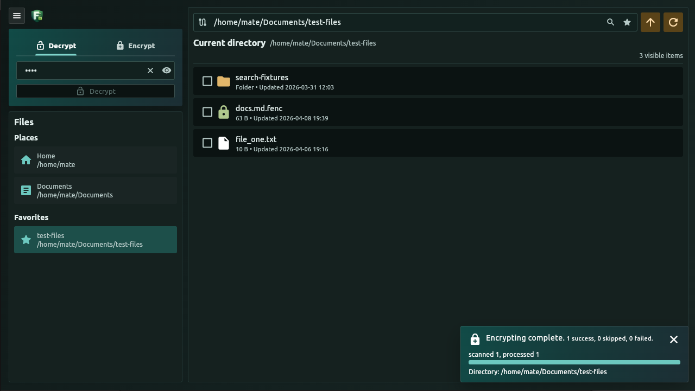
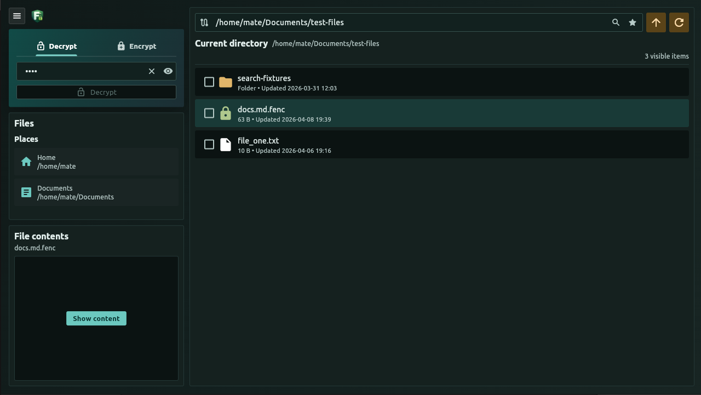

A file or a whole folder
Select individual files, folders, or both. Encrypt or decrypt the files inside selected folders recursively, with progress you can follow and the option to stop scheduling more files.
Made for Linux desktop
In the era of AI agents, it is becoming increasingly important to protect important files from accidental access. Give your important files a little more privacy. Encrypt and decrypt them with a password, using AES-256-GCM, in a familiar desktop file browser.
Ready for your desktop
AES-256-GCMFile encryption
Files & foldersRecursive processing
Preview & searchSupported text files
A closer look


Protection meets practicality
Everyday file tools, with encryption built into the workflow.
Select individual files, folders, or both. Encrypt or decrypt the files inside selected folders recursively, with progress you can follow and the option to stop scheduling more files.
Browse your filesystem, save favorite folders, and search file names and supported text contents. Include encrypted text in your search when you provide the correct password.
Reveal supported encrypted text in memory without writing a plaintext file to disk. Edit supported text files, including encrypted ones, and choose a light, dark, or system theme.
A simple round trip
Choose your files, enter and confirm your encryption password, then encrypt. To restore them, select the encrypted files and decrypt with the same password.
notes.txtnotes.txt.fencDecrypt with the correct password to restore notes.txt.
The project
File Encrypter is a desktop application focused on password-based file protection.